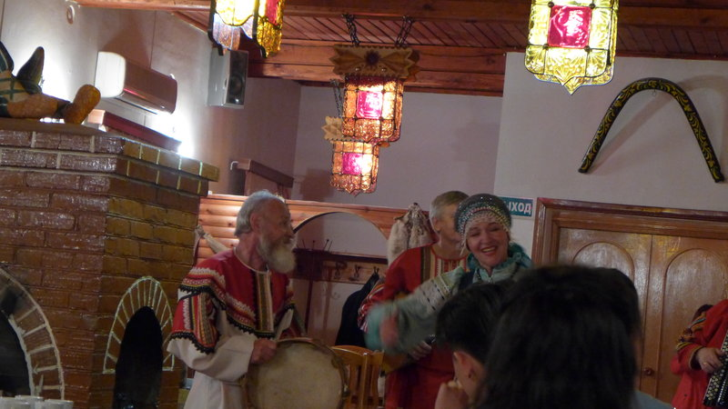
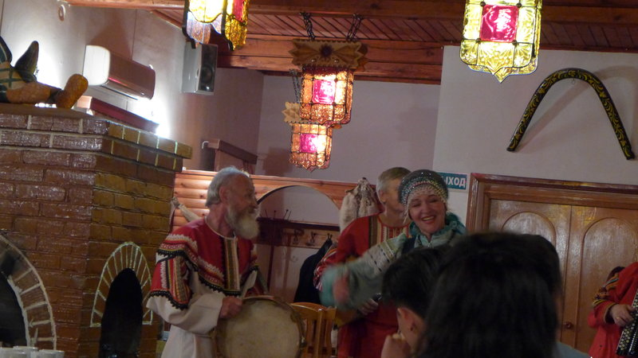

金環這小鎮 夢幻程度直逼 迪士尼啊！!
金環這小鎮 夢幻程度直逼 迪士尼啊！!
 俄羅斯的傳統美食 魚子醬
俄羅斯的傳統美食 魚子醬  因為餐廳有安排和客人的互動 就像一個party
因為餐廳有安排和客人的互動 就像一個party
 隨便抓了幾個團員 透過翻譯告訴大家 歡迎來自台灣的樂隊! 當然搞笑歡樂的成分居多
 俄羅斯傳統樂器 表演 順便近距離的看一下他們的傳統服飾 整個就是熱鬧的氣氛
隨便抓了幾個團員 透過翻譯告訴大家 歡迎來自台灣的樂隊! 當然搞笑歡樂的成分居多
 俄羅斯傳統樂器 表演 順便近距離的看一下他們的傳統服飾 整個就是熱鬧的氣氛
 鋸琴 我第一次看到這樂器 是在這國家
鋸琴 我第一次看到這樂器 是在這國家
 雞肉的料理很美味
雞肉的料理很美味

 俄式的餃子
俄式的餃子
 豐富的一餐 熱鬧有趣的回憶
豐富的一餐 熱鬧有趣的回憶